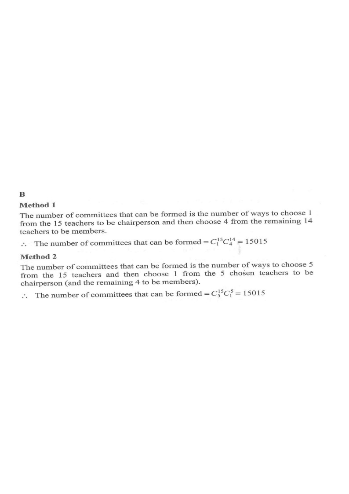

There are 15 teachers in a group. If 5 teachers are selected from the group to form a committee consisting of 1 chairperson and 4 members, how many different committees can be formed?
- A. 3 003
- B. 15 015
- C. 20 475
- D. 360 360

1
Understand the task
We choose 5 teachers out of 15,
and the committee has distinct posts: 1 chairperson and 4 members.
and the committee has distinct posts: 1 chairperson and 4 members.
Hint: posts are different — the chairperson is not interchangeable with a member.
2
Method 1 — choose chairperson first
Combination Formula
\(C_{r}^{n}=\dfrac{n!}{r!\,(n-r)!}\)
After the chairperson is fixed, the \(4\) members are chosen from the remaining \(14\): \(C_{4}^{14}=1001\).
Choose 1 chairperson from the 15 teachers, then choose 4 members from the remaining 14:
\[ C_1^{15}\times C_4^{14}=15\times 1001=15015 \]
Hint: after fixing the chairperson, only 14 teachers remain for the member slots.
3
Method 2 — choose the whole committee first
Multiplication Principle
\(C_{5}^{15}\times C_{1}^{5}\)
Choosing the \(5\) teachers first and then the chairperson gives the same count \(3003\times 5\).
Choose any 5 teachers from 15 first, then choose 1 of these 5 to be chairperson:
\[ C_5^{15}\times C_1^{5}=3003\times 5=15015 \]
Hint: both methods must give the same answer — a good check!
4
Why 360 360 is a trap
the other 4 positions are identical member slots. \[ \frac{360360}{4!}=15015 \]
Removing Overcounting by Identical Slots
\(\dfrac{P_{5}^{15}}{4!}=\dfrac{360\,360}{24}\)
Only the chairperson is distinguished, so the \(4!\) orders of the four member slots must be divided out.
If we treat all 5 posts as ordered, we would get
\[ P_5^{15}=\frac{15!}{10!}=360360 \]
but here only the chairperson is distinguished;the other 4 positions are identical member slots. \[ \frac{360360}{4!}=15015 \]
Hint: divide out the overcounting of the 4 interchangeable members.
5
Conclusion
Both valid methods give \(15015\), which matches option B.
Hint: always ask — are the positions distinct? If not, divide by the factorial of the identical slots.
Answer: 15 015 (Option B)
PRACTICESimilar question — try it yourself
Question. A committee of \(4\) teachers is to be formed from \(12\) teachers. One of the \(4\) is to be the chairperson and the other three are ordinary members. Find the number of ways of forming the committee.
Show the worked solution
Step 1. Method 1: choose the chairperson first,
then the \(3\) members from the remaining \(11\).
then the \(3\) members from the remaining \(11\).
Step 2. \(C_{1}^{12}\times C_{3}^{11}=12\times 165=1980\).
Step 3. Method 2: choose the \(4\) teachers first, then choose \(1\) of them as chairperson: \(C_{4}^{12}\times C_{1}^{4}=495\times 4=1980\).
Step 4. Both methods agree, so there are \(1980\) ways.
Answer: \(1980\)